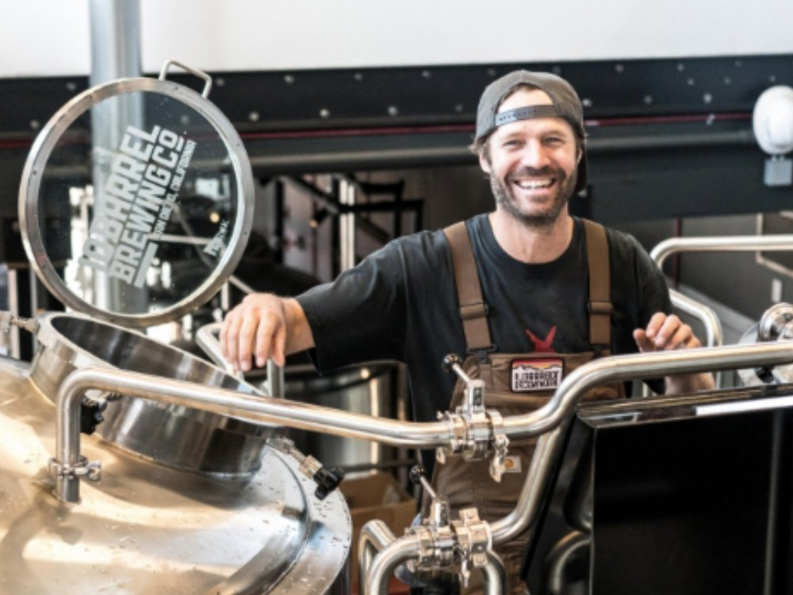
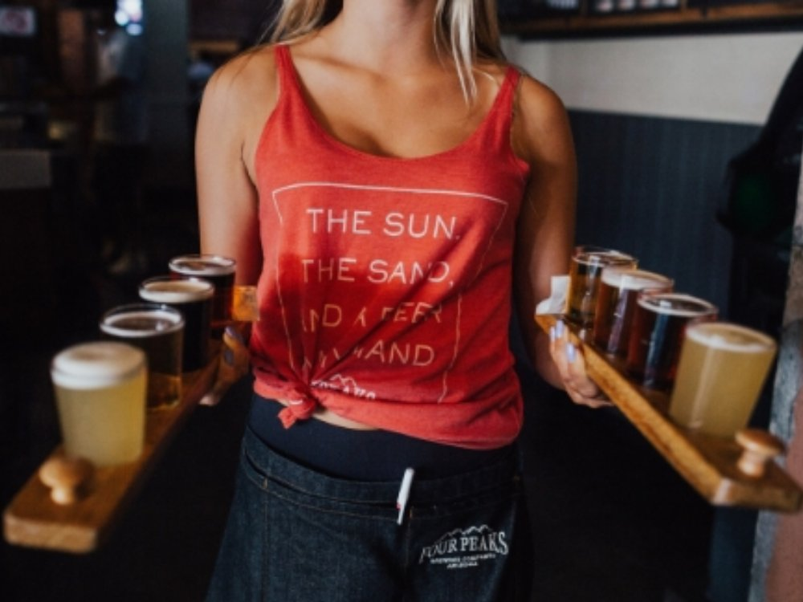

Spaans vakmanschap, Belgische service
Golderos Benelux is de officiële verdeler van Golderos S.A. voor België, Nederland en Luxemburg. Wij combineren meer dan een halve eeuw Spaanse koeltechnische expertise met lokale voorraad, snelle service en advies in uw taal.
Golderos: pionier in drankenkoeling sinds 1970
In 1970 opende Emilio Golderos Luna in Madrid een herstelatelier voor koelers. Wat begon met herstellen, groeide door jarenlang onderzoek en ontwikkeling uit tot een eigen productlijn — en uiteindelijk tot een van de grootste Spaanse bedrijven in industriële koeling van dranken voor de horeca.
Golderos ontwerpt, bouwt, verdeelt en onderhoudt vandaag het volledige spectrum: tapkoelers, roermotoren, koelspiralen en alle componenten voor het verkooppunt. De grootste nationale en internationale brouwerijen vertrouwen op die technologie. De kennis werd opgebouwd rond bier — het vak waarin Golderos een gerenommeerd specialist is — maar de koelers bedienen intussen elk type drank.

Mijlpalen van een familie van koeltechniekers
-
1970
Emilio Golderos Luna opent in Madrid een herstelatelier voor koelers — de geboorte van het bedrijf.
-
Jaren '80–'90
Van herstellen naar bouwen: Golderos ontwikkelt eigen tapkoelers en componenten, met onderzoek en ontwikkeling als rode draad. Meerdere patenten dragen bij aan de vooruitgang van de hele sector.
-
1998
De Spaanse School voor Bier en Mout erkent de jarenlange studies van oprichter Emilio Golderos Luna — een bekroning van zijn pionierswerk in biertapkoeling.
-
Vandaag
Golderos is een van de grootste Spaanse specialisten in industriële drankenkoeling, partner van grote brouwerijen, en breidt zijn technologie uit naar elk type getapte drank.
-
Nu ook in de Benelux
Met Golderos Benelux krijgt het merk een vaste thuisbasis in België: officiële verdeling, lokale voorraad en een eigen service-team voor België, Nederland en Luxemburg.
Waarom wij?
Een topkoeler verdient topservice. Als officiële verdeler staan wij garant voor originele toestellen en wisselstukken, correcte garantieafhandeling en techniekers die het Golderos-gamma door en door kennen.
- Officiële verdeler — rechtstreekse lijn met de fabriek in Madrid
- Lokale voorraad van koelers én wisselstukken in België
- Interventie binnen 48 uur in de hele Benelux
- Advies in het Nederlands en het Frans
